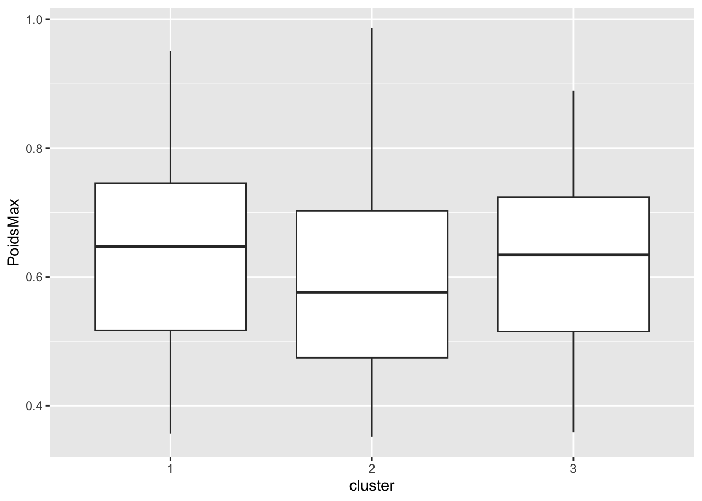
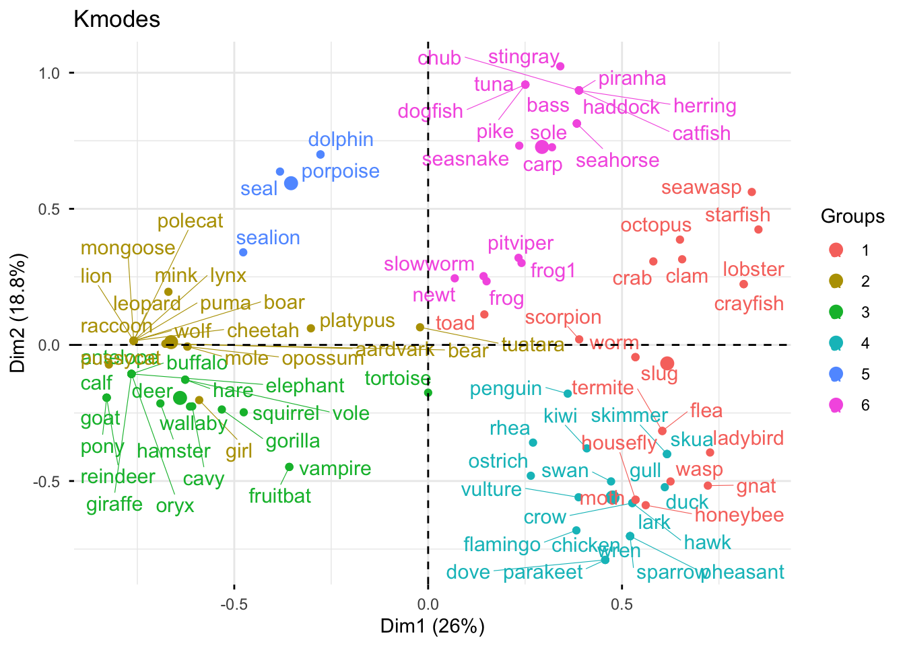
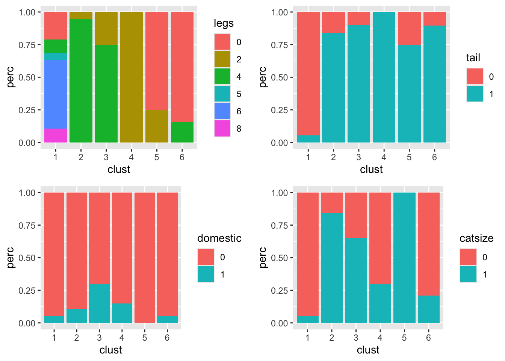

library(forcats)
library(ggplot2)
library(corrplot)
library(factoextra)
library(FactoMineR)
library(mclust)
library(cluster)
library(ppclust)
library(ggalluvial)
library(klaR)
library(gridExtra)
#library(circlize)
#library(viridis)
library(reshape2)TP 1 - Kmeans et ses variantes
Correction - 2025/2026
L’objectif de ce TP est d’illustrer les notions abordées dans le chapitre dédié aux algorithmes de clustering de type Kmeans. Les librairies R nécessaires pour ce TP :
1 Clustering des données de vins (quantitatives)
1.1 Analyse descriptive des données
1.1.1 Présentation des données de vins
Dans ce TP, on va utiliser le jeu de données wine disponible sur la page moodle du cours.
Ce jeu de données comprend des mesures physico-chimiques réalisées sur un échantillon de \(n=600\) vins (rouges et blancs) du Portugal. Ces mesures sont complétées par une évaluation sensorielle de la qualité par un ensemble d’experts. Chaque vin est décrit par les variables suivantes :
- Qualite : son évaluation sensorielle par les experts (“bad”,“medium”,“good”),
- Type : son type (1 pour un vin rouge, 0 pour un vin blanc),
- AcidVol : la teneur en acide volatile (en g/dm3 d’acide acétique),
- AcidCitr : la teneur en acide citrique (en g/dm3),
- SO2lbr : le dosage du dioxyde de soufre libre (en mg/dm3),
- SO2tot : le dosage du dioxyde de soufre total (en mg/dm3),
- Densite : la densité (en g/cm3),
- Alcool : le degré d’alcool (en % Vol.).
Question 1. Récupérez sur moodle le jeu de données wine.txt et chargez-le sous R.
wine <-read.table(.......)Vérifiez la nature des variables à l’aide de la fonction str(). Modifiez si nécessaire les variables qualitatives (à l’aide de as.factor()) et transformez les modalités “1” et “0” de la variable Typeen “rouge” et “blanc” respectivement (à l’aide de la fonction factor()).
wine$Qualite <- ....
wine$Type <- factor(....)
Correction
wine<-read.table("wine.txt",header=T)
str(wine)'data.frame': 600 obs. of 8 variables:
$ Qualite : chr "medium" "medium" "medium" "medium" ...
$ Type : int 1 0 0 0 0 1 0 0 0 0 ...
$ AcidVol : num 0.62 0.34 0.22 0.35 0.42 0.48 0.21 0.28 0.3 0.4 ...
$ AcidCitr: num 0.01 0.1 0.22 0.46 0.32 0.32 0.32 0.14 0.25 0.42 ...
$ SO2lbr : num 8 17 39 61 20 21 39 64 21 41 ...
$ SO2tot : int 46 63 110 183 167 122 113 159 124 176 ...
$ Densite : num 0.993 0.994 0.999 0.998 0.995 ...
$ Alcool : num 11.8 9.2 9 9 10.6 9.4 10.2 10 10.8 9.4 ...wine$Qualite <- as.factor(wine$Qualite)
wine$Type <- factor(wine$Type, labels = c("blanc", "rouge"))
dim(wine)[1] 600 8head(wine) Qualite Type AcidVol AcidCitr SO2lbr SO2tot Densite Alcool
1352 medium rouge 0.62 0.01 8 46 0.99332 11.8
5493 medium blanc 0.34 0.10 17 63 0.99370 9.2
5153 medium blanc 0.22 0.22 39 110 0.99855 9.0
5308 medium blanc 0.35 0.46 61 183 0.99786 9.0
3866 medium blanc 0.42 0.32 20 167 0.99479 10.6
694 medium rouge 0.48 0.32 21 122 0.99840 9.41.1.2 Statistiques descriptives
Question 2. Faites quelques statistiques descriptives pour faire connaissance avec le jeu de données, avec des choix adaptés à la nature des variables. En particulier, étudiez les corrélations entre les variables quantitatives et faites une ACP.
# A completer
Correction
summary(wine) Qualite Type AcidVol AcidCitr SO2lbr
bad : 19 blanc:425 Min. :0.1000 Min. :0.0000 Min. : 2.00
good :110 rouge:175 1st Qu.:0.2400 1st Qu.:0.2400 1st Qu.: 15.75
medium:471 Median :0.3000 Median :0.3000 Median : 27.00
Mean :0.3512 Mean :0.3141 Mean : 29.41
3rd Qu.:0.4300 3rd Qu.:0.3900 3rd Qu.: 41.00
Max. :1.0400 Max. :1.0000 Max. :112.00
SO2tot Densite Alcool
Min. : 7.0 Min. :0.9875 Min. : 8.00
1st Qu.: 68.0 1st Qu.:0.9925 1st Qu.: 9.50
Median :114.5 Median :0.9949 Median :10.40
Mean :111.2 Mean :0.9947 Mean :10.49
3rd Qu.:154.0 3rd Qu.:0.9970 3rd Qu.:11.30
Max. :278.0 Max. :1.0030 Max. :14.00 On trace les barplots pour les variables qualitatives
ggplot(wine) +
geom_bar(aes(x = Type, y = ..prop.., group = 1))+
ggtitle("Frequences")wine$Qualite_rec <- fct_relevel(wine$Qualite, "bad", "medium", "good")
ggplot(wine) +
geom_bar(aes(x = Qualite_rec, y = ..prop.., group = 1))+
ggtitle("Frequences")+xlab("Qualite")wine<-wine[,-9]On trace les violin-plots pour chacune des variables quantitatives :
ggplot(melt(wine[,c(3,4,8)]),aes(x=variable,y=value))+
geom_violin()ggplot(melt(wine[,c(5,6)]),aes(x=variable,y=value))+
geom_violin()ggplot(data.frame(variable=rep("Densite",nrow(wine)),value=wine$Densite),aes(x=variable,y=value))+
geom_violin()On peut regarder également les corrélations entre variables quantitatives :
corrplot(cor(wine[,-c(1,2)]),method="ellipse")
ACP pour visualiser les données :
resacp<-PCA(wine,quali.sup=c(1,2), scale.unit = TRUE,graph=FALSE)
# Visualisation des valeurs propres
fviz_eig(resacp)# Visualisation des variables
fviz_pca_var(resacp,axes=c(1,2))# Projection des individus
fviz_pca_ind(resacp,axes=c(1,2),
geom = c("point"),
habillage=wine$Type,
repel=T)fviz_pca_ind(resacp,axes=c(1,3),
geom = c("point"),
habillage=wine$Type,
repel=T)Question : Pour la suite, on va utiliser les variables quantitatives pour faire de la classification non supervisée des vins. Les variables Qualite et Type seront utilisées comme des variables extérieures pour comparer / croiser avec les classifications obtenues pour l’interprétation.
Pensez-vous qu’il est nécessaire de transformer les variables quantitatives dans l’objectif de clustering avec un algorithme des Kmeans ? Si oui, mettez en place cette transformation.
# A completer
Correction
En raison des différences d’échelle entre les différentes variables, on va centrer-réduire les données.
wineinit<-wine
wine[,-c(1,2)]<-scale(wine[,-c(1,2)],center=T,scale=T)1.2 Classification avec l’algorithme des Kmeans
1.2.1 A K=3 fixé
Question : A l’aide de la fonction kmeans(), faites une classification non supervisée en 3 classes des vins. Regardez les options disponibles dans la fonction kmeans().
help(kmeans)
reskmeans<-kmeans(....)
Correction
K<-3
reskmeans<-kmeans(wine[,-c(1,2)],centers=K) Question : Combien a-ton de vins par classe ? Visualisez la classification obtenue dans les premiers plans de l’ACP (vous pouvez utiliser la fonction PCA() de la librairie FactoMineR et la fonction fviz_cluster de la librairie factoextra).
# A COMPLETER
Correction
table(reskmeans$cluster)
1 2 3
170 182 248 fviz_cluster(reskmeans,data=wine[,-c(1,2)],ellipse.type="norm",labelsize=8,geom=c("point"))+ggtitle("")
fviz_pca_ind(resacp,col.ind=as.factor(reskmeans$cluster),
geom = c("point"),axes=c(1,2))
fviz_pca_ind(resacp,col.ind=as.factor(reskmeans$cluster),
geom = c("point"),axes=c(1,3))fviz_pca_ind(resacp,col.ind=as.factor(reskmeans$cluster),
geom = c("point"),axes=c(2,3))Question : La classification obtenue précédemment a-t-elle un lien avec le type de vins ? Avec la qualité du vin ? Vous pouvez vous aider de la fonction table(), la fonction adjustedRandIndex() de la librairie mclust, …
# A COMPLETER
Correction
table(reskmeans$cluster,wine$Type)
blanc rouge
1 21 149
2 173 9
3 231 17adjustedRandIndex(reskmeans$cluster,wine$Type)[1] 0.3552072table(reskmeans$cluster,wine$Qualite)
bad good medium
1 7 15 148
2 4 21 157
3 8 74 166adjustedRandIndex(reskmeans$cluster,wine$Qualite)[1] -0.0015721371.2.2 Choix du nombre de classes
Question : On s’intéresse dans cette section au choix du nombre de classes \(K\) en étudiant l’évolution de l’inertie intraclasse. En faisant varier \(K\) entre 2 et 15, calculez l’inertie intraclasse associée à chaque classification obtenue. Tracez l’évolution de l’inertie intraclasse en fonction du nombre de classes. Qu’en concluez-vous ?
# A completer
Kmax<-15
reskmeanscl<-matrix(0,nrow=nrow(wine),ncol=Kmax-1)
Iintra<-NULL
for (k in 2:Kmax){
resaux<-kmeans(...)
reskmeanscl[,k-1]<-resaux$...
Iintra<-c(Iintra,resaux$...)
}
df<-data.frame(K=2:15,Iintra=Iintra)
ggplot(df,aes(x=K,y=Iintra))+geom_line()+geom_point()+xlab("Nombre de classes")+ylab("Inertie intraclasse")
Correction
Kmax<-15
reskmeanscl<-matrix(0,nrow=nrow(wine),ncol=Kmax-1)
Iintra<-NULL
for (k in 2:Kmax){
resaux<-kmeans(wine[,-c(1:2)],centers=k)
reskmeanscl[,k-1]<-resaux$cluster
Iintra<-c(Iintra,resaux$tot.withinss)
}
df<-data.frame(K=2:15,Iintra=Iintra)
ggplot(df,aes(x=K,y=Iintra))+
geom_line()+
geom_point()+
xlab("Nombre de classes")+
ylab("Inertie intraclasse")Question : Reprendre la question du choix du nombre de classes en utilisant le critère silhouette (vous pouvez vous aider de la fonction silhouette() de la librairie cluster). Pour la classification sélectionnée, représentez les poids \(s(i)\) de chaque individu à l’aide de la fonction fviz_silhouette().
# A COMPLETER
Silhou<-NULL
for (k in 2:Kmax){
aux<-silhouette(..., daisy(wine[,-c(1,2)]))
Silhou<-c(Silhou,mean(aux[,3]))
}
df<-data.frame(K=2:Kmax,Silhouette=Silhou)
ggplot(df,aes(x=K,y=Silhouette))+
geom_point()+
geom_line()+theme(legend.position = "bottom")
aux<-silhouette(...)
fviz_silhouette(aux)+theme(plot.title = element_text(size =9))
rm(df,Silhou,aux)
Correction
Silhou<-NULL
for (k in 2:Kmax){
aux<-silhouette(reskmeanscl[,k-1], daisy(wine[,-c(1,2)]))
Silhou<-c(Silhou,mean(aux[,3]))
}
df<-data.frame(K=2:Kmax,Silhouette=Silhou)
ggplot(df,aes(x=K,y=Silhouette))+
geom_point()+
geom_line()+theme(legend.position = "bottom")aux<-silhouette(reskmeanscl[,3], daisy(wine[,-c(1:2)]))
fviz_silhouette(aux)+theme(plot.title = element_text(size =9)) cluster size ave.sil.width
1 1 218 0.33
2 2 168 0.29
3 3 114 0.29
4 4 100 0.18rm(df,Silhou,aux)1.3 Classification avec l’algorithme PAM
Question : Déterminez une classification en \(K=3\) classes des vins en utilisant la méthode PAM (fonction pam()de la librairie cluster) et représentez graphiquement la classification obtenue. A-t-elle un lien avec le type de vins ? Avec la qualité ? Avec la classification en \(K=3\) classes obtenue avec la méthode des Kmeans?
# A COMPLETER
resPAM<-pam(x=....,k=..,metric=...)
resPAM$medoids
resPAM$id.med
fviz_cluster(resPAM,data=wine[,-c(1,2)],ellipse.type="norm",labelsize=8,geom=c("point"))+ggtitle("")
fviz_pca_ind(resacp,col.ind=as.factor(resPAM$clustering),geom = c("point"),axes=c(1,2))
adjustedRandIndex(......)
table(.......)
clust1<-paste("K-k",......,sep="")
clust2<-paste("PAM-k",......,sep="")
Tab<-melt(table(clust1,clust2))
ggplot(Tab,aes(y=value,axis1=clust1,axis2=clust2))+
geom_alluvium(aes(fill=clust1))+
geom_stratum(width = 1/12)+
geom_text(stat = "stratum", aes(label = after_stat(stratum)))+
theme(legend.position = "none")
Correction
resPAM<-pam(wine[,-c(1,2)], 3, metric = "euclidean")
resPAM$medoids AcidVol AcidCitr SO2lbr SO2tot Densite Alcool
1394 1.0289792 -0.40602926 -0.58761623 -0.9282763 0.4927485 -0.2492357
1604 -0.7392533 0.03737243 0.99240181 1.3323390 0.3148856 -0.5107428
2155 -0.6173062 0.16405862 0.08953436 -0.3230722 -1.0532900 0.7096239resPAM$id.med[1] 562 316 22fviz_cluster(resPAM,data=wine[,-c(1,2)],ellipse.type="norm",labelsize=8,geom=c("point"))+ggtitle("")fviz_pca_ind(resacp,col.ind=as.factor(resPAM$clustering),geom = c("point"),axes=c(1,2))adjustedRandIndex(resPAM$clustering,wine$Type)[1] 0.3553001table(resPAM$clustering,wine$Type)
blanc rouge
1 34 163
2 177 1
3 214 11adjustedRandIndex(resPAM$clustering,wine$Qualite)[1] 0.01383852table(resPAM$clustering,wine$Qualite)
bad good medium
1 11 15 171
2 4 23 151
3 4 72 149adjustedRandIndex(resPAM$clustering,reskmeans$cluster)[1] 0.7990222table(resPAM$clustering,reskmeans$cluster)
1 2 3
1 170 11 16
2 0 167 11
3 0 4 221clust1<-paste("K-k",reskmeanscl[,2],sep="")
clust2<-paste("PAM-k",resPAM$clustering,sep="")
Tab<-melt(table(clust1,clust2))
ggplot(Tab,aes(y=value,axis1=clust1,axis2=clust2))+
geom_alluvium(aes(fill=clust1))+
geom_stratum(width = 1/12)+
geom_text(stat = "stratum", aes(label = after_stat(stratum)))+
theme(legend.position = "none")rm(resPAM)Question : Déterminez le nombre de classes optimal par le critère Silhouette pour \(K\) variant entre 2 et 15 avec l’algorithme PAM. Commentez la classification retenue. Est-elle proche de celle obtenue avec l’algorithme des Kmeans ?
# A completer
Kmax<-15
resPAMcl<-matrix(0,nrow=nrow(wine),ncol=Kmax-1)
Silhou<-NULL
for (k in 2:Kmax){
resaux<-pam(.....)
resPAMcl[,k-1]<-resaux$clustering
aux<-silhouette(resPAMcl[,k-1], daisy(wine[,-c(1,2)]))
Silhou<-c(Silhou,......)
}
df<-data.frame(K=2:Kmax,Silhouette=Silhou)
ggplot(df,aes(x=K,y=Silhouette))+
geom_point()+
geom_line()+theme(legend.position = "bottom")
aux<-silhouette(resPAMcl[,1], daisy(wine[,-c(1:2)]))
fviz_silhouette(aux)+theme(plot.title = element_text(size =9))
adjustedRandIndex(.....)
table(.....)
Correction
Kmax<-15
resPAMcl<-matrix(0,nrow=nrow(wine),ncol=Kmax-1)
Silhou<-NULL
for (k in 2:Kmax){
resaux<-pam(wine[,-c(1:2)],k,metric="euclidean")
resPAMcl[,k-1]<-resaux$clustering
aux<-silhouette(resPAMcl[,k-1], daisy(wine[,-c(1,2)]))
Silhou<-c(Silhou,mean(aux[,3]))
}
df<-data.frame(K=2:Kmax,Silhouette=Silhou)
ggplot(df,aes(x=K,y=Silhouette))+
geom_point()+
geom_line()+theme(legend.position = "bottom")aux<-silhouette(resPAMcl[,1], daisy(wine[,-c(1:2)]))
fviz_silhouette(aux)+theme(plot.title = element_text(size =9)) cluster size ave.sil.width
1 1 203 0.23
2 2 397 0.28adjustedRandIndex(resPAMcl[,1],reskmeanscl[,3])[1] 0.358877table(resPAMcl[,1],reskmeanscl[,3])
1 2 3 4
1 13 3 114 73
2 205 165 0 27table(resPAMcl[,1],wine$Type)
blanc rouge
1 37 166
2 388 9clust1<-paste("K-k",reskmeanscl[,3],sep="")
clust2<-paste("PAM-k",resPAMcl[,1],sep="")
Tab<-melt(table(clust1,clust2))
ggplot(Tab,aes(y=value,axis1=clust1,axis2=clust2))+
geom_alluvium(aes(fill=clust1))+
geom_stratum(width = 1/12)+
geom_text(stat = "stratum", aes(label = after_stat(stratum)))+
theme(legend.position = "none")1.4 Classification avec l’algorithme fuzzy c-means
1.4.1 Présentation
Avec les algorithmes de clustering précédents (Kmeans, PAM) nous obtenons une classification “dure” au sens que chaque individu ne peut appartenir qu’à une seule classe et chaque individu participe avec le même poids à la construction des classes. Une classification dure \(\mathcal{P}_K=\{\mathcal{C}_1,\ldots,\mathcal{C}_K\}\) peut se traduire en une matrice \(Z=(z_{ik})_{\underset{1\leq k \leq K}{1\leq i \leq n}}\) avec \(z_{ik}=1\) si \(i\in\mathcal{C}_k\) et 0 sinon. Dans cette section, nous allons nous intéresser à une adaptation de l’algorithme des Kmeans, appelée fuzzy c-means. L’idée est de retourner une classification fuzzy c’est-à-dire une matrice \(W=(\omega_{ik})_{\underset{1\leq k \leq K}{1\leq i \leq n}}\) avec \(\forall i,\ k,\ \omega_{ik}\geq 0\) et \(\forall i,\ \underset{k=1}{\stackrel{K}{\sum}} \omega_{ik}=1\). On donne ainsi plutôt un poids \(\omega_{ik}\) que l’individu \(i\) appartienne à la classe \(\mathcal{C}_k\).
L’algorithme fuzzy c-means a pour fonction objective
\[ \underset{W,\{m_1,\ldots,m_K\}}{\mbox{argmin}}\ \underset{i=1}{\stackrel{n}{\sum}}\underset{k=1}{\stackrel{K}{\sum}} (\omega_{ik})^\gamma\ \|x_i - m_k\|^2 \] où \(X=(x_1,\ldots,x_n)'\) est la matrice des données, \(\gamma\in[1,+\infty[\), \(m_k\) est le centre de la classe \(\mathcal{C}_k\).
Dans le même principe que l’algorithme des Kmeans, l’algorithme fuzzy c-means est un algorithme itératif :
- Step 1: Initialisation des poids \(W^{(0)}\)
- Step 2: A l’itération \(r\), on calcule les centres des classes
\[ m_k^{(r)} = \frac{\underset{i=1}{\stackrel{n}{\sum}} (\omega_{ik}^{(r-1)})^\gamma x_i}{\underset{i=1}{\stackrel{n}{\sum}} (\omega_{ik}^{(r-1)})^\gamma} \]
Step 3: Mise à jour des poids (\(\gamma>1\)) \[ \omega_{ik}^{(r)} = \left[\underset{\ell=1}{\stackrel{K}{\sum}} \left(\frac{\|x_i - m_k^{(r)}\|^2}{\|x_i - m_\ell^{(r)}\|^2}\right)^{\frac{1}{\gamma-1}} \right]^{-1} \]
Step 4: Si \(\|W^{(r)} - W^{(r-1)}\|<\) seuil, on s’arrête, sinon on retourne à l’étape 2.
En général, la puissance choisie sur les poids est \(\gamma=2\). Dans le cas \(\gamma=1\), on retrouve l’algorithme des Kmeans.
1.4.2 Application avec R
Nous allons ici nous appuyer sur la fonction fcm() de la librairie ppclust.
Question : Utilisez cet algorithme pour obtenir une classification en \(3\) classes. Comment sont initialisés les poids ? Comment est obtenue la classification finale ? A l’aide des poids, étudiez la stabilité des classes. Vous pouvez pour cela étudier les poids des individus par classe.
# A COMPLETER
library(ppclust)
resfcm<-fcm(...)
Correction
library(ppclust)
resfcm<-fcm(wine[,-c(1,2)],centers= 3, m=2)
table(apply(resfcm$u,1,which.max))
1 2 3
230 175 195 table(resfcm$cluster)
1 2 3
230 175 195 Aux<-data.frame(cluster=as.factor(resfcm$cluster),PoidsMax=apply(resfcm$u,1,max))
ggplot(Aux,aes(x=cluster,y=PoidsMax))+geom_boxplot()
Question : Représentez la classification obtenue sur le premier plan de l’ACP en nuançant selon les poids.
# A COMPLETER
fviz_pca_ind(resacp,axes=c(1,2),geom=c("point"),col.ind=apply(....................))+
scale_color_gradient2(low="white", mid="blue",high="red", midpoint=0.8, space = "Lab")
Correction
fviz_pca_ind(resacp,axes=c(1,2),geom=c("point"),habillage=as.factor(resfcm$cluster))fviz_pca_ind(resacp,axes=c(1,2),geom=c("point"),col.ind=apply(resfcm$u,1,max))+
scale_color_gradient2(low="white", mid="blue",high="red", midpoint=0.8, space = "Lab")Question : Comparez les classifications obtenues avec Kmeans et fuzzy c-means. Commentez.
# A COMPLETER
Correction
reskmeans<-kmeans(wine[,-c(1,2)],3)
adjustedRandIndex(reskmeans$cluster,resfcm$cluster)[1] 0.8800417table(reskmeans$cluster,resfcm$cluster)
1 2 3
1 228 9 11
2 0 0 182
3 2 166 2set.seed(1234)
library(circlize)
#library(viridis)
library(reshape2)
clust1F<-paste("Cl1-K",reskmeans$cluster,sep="")
clust2F<-paste("Cl2-K",resfcm$cluster,sep="")
#Tab<-melt(table(clust1F,clust2F))
#mycolor <- viridis(6, alpha = 1, begin = 0, end = 1, option = "H")
#mycolor <- mycolor[sample(1:6)]
chordDiagram(table(clust2F,clust1F)) #,grid.col=mycolor)2 Clustering des données Zoo
Dans cette partie, on souhaite obtenir une classification d’animaux d’un zoo en fonction de plusieurs caractéristiques. Ces 16 variables sont qualitatives (majoritairement binaires).
2.1 Statistiques descriptives
Question : Commencez par charger le jeu de données zoo-dataTP.txt et faites quelques statistiques descriptives pour vous familiariser avec ce jeu de données.
zoo<- ...
# A COMPLETER
Correction
# Trace de construction des données
zoo<-read.table("zoo.data",sep=",")
for (j in 2:ncol(zoo))
zoo[,j]<-as.factor(zoo[,j])
zoo[27,1]<-"frog1"
rownames(zoo)<- zoo[,1]
type<-zoo[,18]
zoo<-zoo[,-c(1,18)]
colnames(zoo)<-c("hair","feathers","eggs","milk","airbone","aquatic","predator","toothed","backbone","breathes","venomous","fins","legs","tail","domestic","catsize")
write.table(zoo,file="zoo-dataTP.txt")zoo<-read.table("zoo-dataTP.txt",header=T,stringsAsFactors = TRUE)
for (j in 1:ncol(zoo))
zoo[,j]<-as.factor(zoo[,j])
summary(zoo) hair feathers eggs milk airbone aquatic predator toothed backbone
0:58 0:81 0:42 0:60 0:77 0:65 0:45 0:40 0:18
1:43 1:20 1:59 1:41 1:24 1:36 1:56 1:61 1:83
breathes venomous fins legs tail domestic catsize
0:21 0:93 0:84 0:23 0:26 0:88 0:57
1:80 1: 8 1:17 2:27 1:75 1:13 1:44
4:38
5: 1
6:10
8: 2 dim(zoo)[1] 101 16Question : Faites une analyse en composantes multiples de ce jeu de données.
res.mca<-MCA(....)
# A COMPLETER
Correction
library("FactoMineR")
library("factoextra")
res.mca<- MCA(zoo,ncp = 5, graph = FALSE)
fviz_screeplot(res.mca)
#plot(res.mca, invisible = c("quali.sup", "ind"), cex=1, col.var = "darkblue", cex.main=2, col.main= "darkblue")
fviz_mca_ind(res.mca,col.ind="darkblue",repel=T)fviz_mca_var(res.mca,col.var="darkblue",repel=T)
fviz_mca_var(res.mca, choice = "mca.cor",
repel = TRUE,
ggtheme = theme_minimal())### Contrib des variables
fviz_contrib(res.mca, choice = "var", axes =1)fviz_contrib(res.mca, choice = "var", axes =2)### plot of individuals
fviz_mca_ind(res.mca, habillage=4,repel=T)fviz_mca_ind(res.mca, habillage=3,repel=T)fviz_mca_ind(res.mca, habillage=12,repel=T)fviz_mca_ind(res.mca, habillage=13,repel=T)2.2 Fonctions auxiliaires pour la suite
Pour la suite du TP, on pourra utiliser les fonctions auxiliaires suivantes. La fonction barplotClus() permet de tracer la répartition des modalités de variables qualitatives pour chaque classe d’un clustering donné.
# J indice des variables
# Data = jeu de données
# clust = clustering étudié
# output : liste des graphes par variable dans J donnant la répartition des modalités de J par classe de clust
barplotClus <- function(clust, Data, J) {
aux.long.p <- heatm(clust, Data, J)$freq
p<-NULL
for (j in 1:length(J)) {
p[[j]] <- ggplot(aux.long.p[which(aux.long.p$variable == colnames(Data)[J[j]]), ],
aes(x = clust, y = perc, fill = value)) + geom_bar(stat = "identity")+
labs(fill = colnames(Data)[J[j]])
}
return(p)
}
heatm <- function(clust, Data, J) {
library(dplyr)
Dataaux <- data.frame(id.s = c(1:nrow(Data)), Data)
aux <- cbind(Dataaux, clust)
aux.long <- melt(data.frame(lapply(aux, as.character)), stringsAsFactors = FALSE,
id = c("id.s", "clust"), factorsAsStrings = T)
# Effectifs
aux.long.q <- aux.long %>%
group_by(clust, variable, value) %>%
mutate(count = n_distinct(id.s)) %>%
distinct(clust, variable, value, count)
# avec fréquences
aux.long.p <- aux.long.q %>%
group_by(clust, variable) %>%
mutate(perc = count/sum(count)) %>%
arrange(clust)
Lev <- NULL
for (j in 1:ncol(Data)) Lev <- c(Lev, levels(Data[, j]))
Jaux <- NULL
for (j in 1:length(J)) {
Jaux <- c(Jaux, which(aux.long.p$variable == colnames(Data)[J[j]]))
}
gaux <- ggplot(aux.long.p[Jaux, ], aes(x = clust, y = value)) + geom_tile(aes(fill = perc)) +
scale_fill_gradient2(low = "white", mid = "blue", high = "red") + theme_minimal()
return(list(gaux = gaux, eff = aux.long.q, freq = aux.long.p))
}2.3 Clustering à l’aide des Kmodes
Dans cette partie, nous allons utiliser la méthode des Kmodes introduite par Huang (1998). Rappelons que cette méthode est une extension des Kmeans dans le cas des données qualitatives. Les modifications par rapport aux Kmeans sont
- le changement de distance : on utilise la dissimilarité basée sur l’appariement simple
\[ d(\mathbf{x}_i,\mathbf{x}_\ell) = \underset{j=1}{\stackrel{p}{\sum}}\ \mathbb{1}_{x_{ij}\neq x_{\ell j}} \]
- le centre d’une classe est calculé en fonction des fréquences des modalités majoritaires présentes dans cette classe: pour la classe \(\mathcal{C}_k\),
\[ \mathbf{m}_k=(m_{k1},\ldots,m_{kp}) \textrm{ avec } m_{kj}= \underset{u_1,\ldots,u_{s_j}}{\mbox{argmax}}\ \underset{i\in\mathcal C_k}{\sum}\ \mathbb{1}_{x_{ij}= u_{s_j}} \]
Question : A l’aide de la fonction kmodes()de la librairie klaR, déterminez une classification en \(K=6\) classes des animaux. Visualisez la classification obtenue. Vous pouvez vous aider des fonctions auxiliaires pour interpréter la classification.
library(klaR)
reskmodes<-kmodes(....)
Correction
library(klaR)
K <- 6
clkmodes <- kmodes(zoo, K, iter.max = 100, weight = FALSE)
table(clkmodes$cluster)
1 2 3 4 5 6
19 19 20 20 4 19 clkmodes$modes hair feathers eggs milk airbone aquatic predator toothed backbone breathes
1 0 0 1 0 0 0 0 0 0 1
2 1 0 0 1 0 0 1 1 1 1
3 1 0 0 1 0 0 0 1 1 1
4 0 1 1 0 1 0 0 0 1 1
5 0 0 0 1 0 1 1 1 1 1
6 0 0 1 0 0 1 1 1 1 0
venomous fins legs tail domestic catsize
1 0 0 6 0 0 0
2 0 0 4 1 0 1
3 0 0 4 1 0 1
4 0 0 2 1 0 0
5 0 1 0 1 0 1
6 0 1 0 1 0 0fviz_mca_ind(res.mca, habillage = as.factor(clkmodes$cluster), geom = c("point","text"),repel=T) +
labs(title = "Kmodes")
p<-barplotClus(clkmodes$cluster, zoo, J = c(1:4))
grid.arrange(grobs=p,ncol=2)rm(p)
p<-barplotClus(clkmodes$cluster, zoo, J = c(5:8))
grid.arrange(grobs=p,ncol=2)rm(p)
p<-barplotClus(clkmodes$cluster, zoo, J = c(9:12))
grid.arrange(grobs=p,ncol=2)rm(p)
p<-barplotClus(clkmodes$cluster, zoo, J = c(13:16))
grid.arrange(grobs=p,ncol=2)
rm(p)df<-data.frame(cl=as.factor(clkmodes$cluster),zoo)
res.mcab<- MCA(df,quali.sup=1,ncp = 5, graph = FALSE)
fviz_mca_ind(res.mcab,col.ind="darkblue",repel=T,habillage=1)fviz_mca_var(res.mcab,col.var="darkblue",repel=T)Question : Pour déterminer le nombre de classes, la méthode du coude peut être utilisée en remplaçant l’inertie intra-classe par le critère “Within Cluster Difference”
\[ WCD(K) = \underset{k=1}{\stackrel{K}{\sum}} \underset{i\in\mathcal C_k}{\sum}\ d(x_i,m_k) \]
où \(d(.,.)\) est l’appariement simple et \(m_k\) est le centre de la classe \(\mathcal C_k\).
Tracez la courbe \(K\mapsto WCD(K)\) pour déterminer le nombre de classes optimal. Vous pouvez vous aider des sorties de la fonction kmodes().
# A COMPLETER
WithinDiff<-NULL
Kmax<-10
Clust<-matrix(0,nrow=nrow(zoo),ncol=Kmax)
for (k in 1:Kmax){
aux<-kmodes(.........)
WithinDiff<-c(WithinDiff,..........)
Clust[,k]<-aux$cluster
}
auxdf<-data.frame(NbCluster=1:Kmax,WithinDiff=WithinDiff)
ggplot(auxdf,aes(x=NbCluster,y=WithinDiff))+geom_point()+
geom_line()
Correction
WithinDiff <- NULL
Kmax <- 10
Clust <- matrix(0, nrow = nrow(zoo), ncol = Kmax)
for (k in 1:Kmax) {
aux <- kmodes(zoo, k, iter.max = 100, weight = FALSE)
WithinDiff <- c(WithinDiff, sum(aux$withindiff))
Clust[, k] <- aux$cluster
}
auxdf <- data.frame(NbCluster = 1:Kmax, WithinDiff = WithinDiff)
ggplot(auxdf, aes(x = NbCluster, y = WithinDiff)) + geom_point() + geom_line()Question Etudiez la classification retenue. On la notera clustkmodes pour la suite
# A COMPLETER
clustkmodes<- ...
Correction
clustkmodes<-Clust[,4]
table(clustkmodes)clustkmodes
1 2 3 4
22 39 19 21 for (k in 1:4){
I<-which(Clust[,4]==k)
print(paste("Classe ",k,sep=""))
print(rownames(zoo)[I])
}[1] "Classe 1"
[1] "bass" "carp" "catfish" "chub" "dogfish" "dolphin"
[7] "frog" "frog1" "haddock" "herring" "newt" "pike"
[13] "piranha" "pitviper" "porpoise" "seahorse" "seasnake" "slowworm"
[19] "sole" "stingray" "tuatara" "tuna"
[1] "Classe 2"
[1] "aardvark" "antelope" "bear" "boar" "buffalo" "calf"
[7] "cavy" "cheetah" "deer" "elephant" "fruitbat" "giraffe"
[13] "girl" "goat" "gorilla" "hamster" "hare" "leopard"
[19] "lion" "lynx" "mink" "mole" "mongoose" "opossum"
[25] "oryx" "platypus" "polecat" "pony" "puma" "pussycat"
[31] "raccoon" "reindeer" "seal" "sealion" "squirrel" "vampire"
[37] "vole" "wallaby" "wolf"
[1] "Classe 3"
[1] "clam" "crab" "crayfish" "flea" "gnat" "honeybee"
[7] "housefly" "ladybird" "lobster" "moth" "octopus" "scorpion"
[13] "seawasp" "slug" "starfish" "termite" "toad" "wasp"
[19] "worm"
[1] "Classe 4"
[1] "chicken" "crow" "dove" "duck" "flamingo" "gull"
[7] "hawk" "kiwi" "lark" "ostrich" "parakeet" "penguin"
[13] "pheasant" "rhea" "skimmer" "skua" "sparrow" "swan"
[19] "tortoise" "vulture" "wren" 2.4 Clustering avec les Kmeans sur les coordonnées de ACM
Une seconde stratégie est de partir des coordonnées de l’analyse des correspondances multiples (ACM) et d’utiliser un algorithme plus usuel sur données quantitatives. Dans cette section, on va appliquer l’algorithme des Kmeans.
Question : Appliquez l’algorithme des Kmeans sur les coordonnées de l’ACM. Pour la détermination du nombre de classes, vous pouvez utiliser l’évolution de l’inertie intra-classe et le critère silhouette.
# A COMPLETER
Correction
set.seed(1234)
Kmax <- 10
kmeansclus <- matrix(0, nrow = nrow(zoo), ncol = (Kmax - 1))
Iintra <- NULL
Silhou <- NULL
for (k in 2:Kmax) {
resaux <- kmeans(res.mca$ind$coord[, 1:5], centers = k, nstart = 10)
kmeansclus[, (k - 1)] <- resaux$cluster
Iintra <- c(Iintra, resaux$tot.withinss)
aux <- silhouette(resaux$cluster, daisy(res.mca$ind$coord))
Silhou <- c(Silhou, mean(aux[, 3]))
}
df <- data.frame(K = 2:Kmax, Iintra = Iintra, Silhou = Silhou)
g1 <- ggplot(df, aes(x = K, y = Iintra)) + geom_line() + geom_point() + xlab("Nombre de classes") +
ylab("Inertie intraclasse")
g2 <- ggplot(df, aes(x = K, y = Silhou)) + geom_line() + geom_point() + xlab("Nombre de classes") +
ylab("Critère Silhouette")
grid.arrange(g1, g2, ncol = 2)Question : Etudiez la classification retenue. Comparez avec la classification obtenue précédemment avec les Kmodes.
# A COMPLETER
Correction
##Comparaison entre 4 et 6 classes pour Kmeans sur MCA
table(kmeansclus[,3],kmeansclus[,5])
1 2 3 4 5 6
1 1 10 0 0 0 9
2 0 0 20 0 0 0
3 3 0 0 18 0 0
4 19 0 0 0 21 0## Comparaison entre Kmeans sur MCA et Kmodes
table(kmeansclus[,3],clustkmodes) clustkmodes
1 2 3 4
1 1 0 19 0
2 0 0 0 20
3 20 1 0 0
4 1 38 0 1adjustedRandIndex(kmeansclus[,3],clustkmodes)[1] 0.8918999clust1F<-paste("Cl-Kmeans",kmeansclus[,3],sep="")
clust2F<-paste("Cl-Kmodes",clustkmodes,sep="")
chordDiagram(table(clust2F,clust1F))